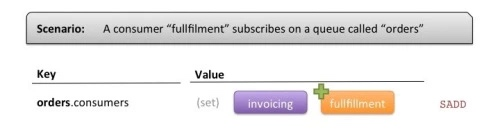

Reliable Delivery Pub/Sub Message Queues with Redis
原文地址 https://davidmarquis.wordpress.com/2013/01/03/reliable-delivery-message-queues-with-redis/
UPDATE_:_ I have open-sourced a Java implementation of the below principles called “RedisQ“. Enjoy!
Redis is a high performance key-value datastore that differs from other key-value solutions in the way it handles values. Instead of just storing values as simple strings, it recognizes multiple specific data types such as Lists, Sets, Hashes (maps), Strings or Numbers. Each data type has its own set of features to manipulate the data it contains in an atomic manner, making it an ideal tool for highly distributed system where concurrency is a potential issue.
Combining those features in creative ways allows for novel ways of doing “traditional” things differently. One particular combination has recently allowed my team and I to implement a moderately (read: good enough) reliable message delivery mechanism for multiple consumers consuming messages at their own pace.
The solution has advantages and some caveats, but if your problem allows you to live with the possible drawbacks, it’s a nice lightweight solution to a problem that is usually answered using some more traditional (and more complex) tools, like *MQs.
In a recent project, we ended up choosing Redis mostly because:
- It was already part of our architecture and we had a simple inter-component messaging use case but didn’t want to introduce a new component in our architecture just for this.
- Expected volume was low, which meant that our data set could fit in memory. Note: although Redis requires everything you store in it to fit in memory, it supports persistence to disk.
- Redis allowed for all of the implementation characteristics we were looking for, namely:
- Concurrency: Because all operations in Redis are atomic, supporting concurrency without too much of a hassle is straightforward.
- Persistence: Configured properly, we can ensure persistence of our queues to disk using one of the supported Redis persistence strategies.
- Lightweight: Using Redis from any language/platform is extremely simple and provisioning it / maintaining it on a production server is dead easy.
In this post, I will go over the strategy we used with regards to Redis data structures and operations for handling the message publishing and consuming.
The high-level strategy consists of the following:
- When each consumer starts up and gets ready to consume messages, it registers by adding itself to a Set representing all consumers registered on a queue.
- When a producers publishes a message on a queue, it:
- Saves the content of the message in a Redis key
- Iterates over the set of consumers registered on the queue, and pushes the message ID in a List for each of the registered consumers
- Each consumer continuously looks out for a new entry in its consumer-specific list and when one comes in, removes the entry, handles the message and passes on to the next message.
Why not use Redis Pub/Sub?
I already see you coming and asking why not using the Pub/Sub semantics supported out-of-the-box by Redis? The reason was two fold:
- What Redis offers with Pub/Sub is a listener model, where each subscriber receives each messages when it is listening, but won’t receive them when not connected.
- In a clustered environment where you have multiple instances of your consumer component running at the same time, each instance would receive each message produced on the channel. We wanted to make sure any given message got consumed once per logical consumer, even when multiple instances of this component are running.
Hence the name of this post “Reliable Delivery”, because we wanted to make sure every logical consumer eventually receives all messages produced on a queue once and only once, even when not connected – due to, for example, a deployment, a restart or a application failure/crash.
Detailed look at the strategy
Here’s a closer look at the different scenarios using a fictive example of an ordering system with multiple consumers interested in messages when new orders are created:
Registering a consumer

A “consumer” represents a logical entity of your architecture. You assign each concumer an identifier which it will use to register itself as a consumer on the queue.
Registering a consumer is only a matter of adding a Set entry to a key that is crafted with the name of the queue in it.
The semantics of a Set are helpful here: each consumer can just “add” an entry to the Set upon start up in a single operation, without the need to worry about any existing value.
Publishing a message
On the Producer side, a few things need to happen when we’re publishing a message to a specific queue:
- The Producer increments a counter to get the next message ID using the INC command on key “orders.nextid”
- It then stores the message in a key containing the new message ID (“orders.messages.8” in our case). The actual format you store messages can be anything. We used a hash with some metadata information about each message, along with the actual payload. The payload can be serialized in JSON, XML or any format makes sense for your usage.
- Then for each consumer registered in key “orders.consumers”, it pushes the message ID using the RPUSH command on lists for each consumers.
To prevent duplication of message content in Redis, we store the content once and then only add references to the messages in consumer-specific lists. When a consumer consumes messages (more on that later), it will remove the ID from its list (its queue), then read the actual message content in a separate operation.
But what happens when all consumers have read the message? If we stopped here, each message would end up being stored in Redis forever. An efficient solution to this problem is to use Redis’ ability to expire (clean up) keys after some time using the EXPIRE command. Using a reasonable amount of time for the expiration makes up for a cheap cleanup process.
A slight variation, at a cost of message content duplication, would be to store the actual message content in each consumer-specific list. For simpler use cases where messages are small enough, this could be a compelling tradeoff.
Consuming messages
Each consumer has a specific identifier and uses this identifier to “listen” on Lists stored in specially crafted Redis keys. Redis has this nice feature of “blocking pop”, which allows a client to remove the first or last element of a list, or wait until an element gets added.
Leveraging this feature, each consumer creates a thread that will continuously loop and do the following:
- Use BLPOP (blocking left pop) with a moderately small timeout to continuously “remove an element from the list or wait a bit”.
- When an element gets removed by the pop operation, read the message content and process it.
- When an element does not get removed (no message available), just wait and start over again.
You can have multiple threads or processes consuming messages with the same “consumer identifier” and the solution still works. This allows for both stability and scalability:
- You can spawn multiple consumers consuming messages as the same logical entity, and ensure that if one goes down, the consumption of messages does not stop.
- You can also spawn more consumers when needed for added horsepower.
Caveats
- The solution as described above does not support retryability of messages in case of a failure to process on the consumer side. I could imagine a way to do it using Redis, but one has to wonder if Redis is still the right tool if such a characteristic is required by your use case.
- The solution also does not guarantee that messages will be consumed in the order they were produced. If you have a single consumer instance you’re covered, but as soon as you have multiple consumer instances you cannot guarantee the ordering of messages. Maintaining a lock in a specific key for each consumer would enable this, at the cost of scalability (only 1 message can be consumed at any time throughout your consumer instances).
- If your producers and consumers are using different languages, you must implement this strategy for each platform/language. Fortunately, there are Redis client for pretty much any popular platforms.
Wrap up
There are many ways Redis can be leveraged using the simple data structures and atomic operations it provides. Using a particular combination of those, we’ve been able to implement a simple system that allowed reliable message delivery to multiple consumers in a clustered environment without too much of a hassle.
Because Redis was already part of our architecture, it proved to be a natural choice. The efforts required to build up this solution outweighed the efforts required to provision and maintain an additional component to manage our queues.
It might not be the most appropriate choice for your case. Be thoughtful in your architectural choices!
UPDATE_:_ I have open-sourced a Java implementation of the above principles called “RedisQ“. Enjoy!
Copyright © 2015 Powered by MWeb, Theme used GitHub CSS.